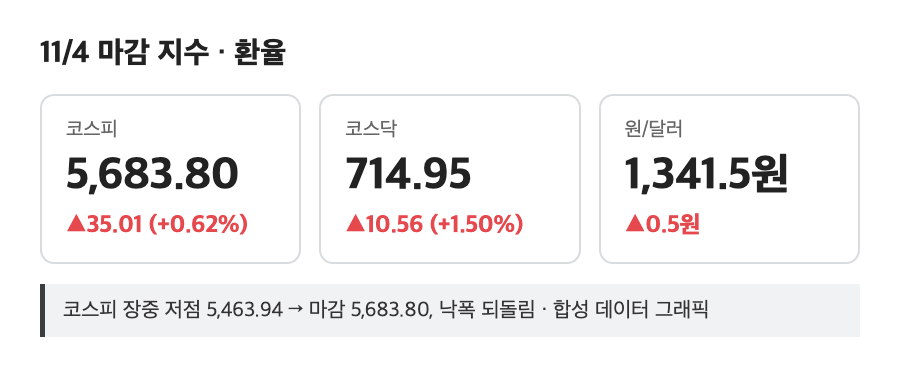
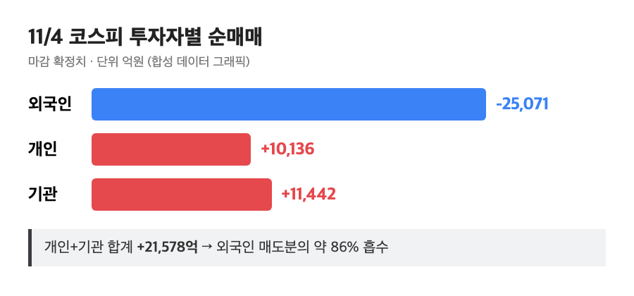
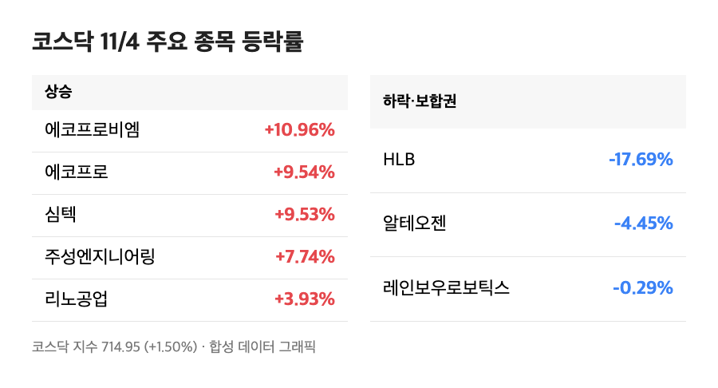

코스피 +0.62%. 숫자만 보면 아무 일도 없던 날 같은데요, 장중 화면은 전혀 아니었어요. 5,400선 중반까지 떨어졌다가 마감 직전에 5,683.80까지 올라온 하루, 순서대로 정리해봤습니다.
📈 코스피 5,683.80 마감 – 장중 -3%대에서 강보합으로 복귀
코스피 5,683.80 (+35.01포인트, +0.62%) / 코스닥 714.95 (+10.56포인트, +1.50%) |

아침엔 5,800선 언저리까지 치고 올라가서 "오, 오늘은 편하게 가나" 싶었는데요. 미국 중간선거에서 민주당이 우세하다는 소식이 굳어지면서 AI 데이터센터 규제 우려가 번졌고, 장중 저점은 5,463.94였어요. 이 구간에서 손절 버튼 위에 손가락이 올라갔던 분들 많았을 거예요. 저도 삼성전자 25주 들고 있어서 화면을 계속 쳐다봤거든요. (장중 고점은 매체마다 5,786.13과 5,828.13으로 다르게 나와서, 집계 시점 차이로 보고 '5,800선 부근'이라고만 적을게요.)
그런데 장 후반 낙폭을 거의 다 되돌리면서 결국 플러스로 끝났어요. 원/달러 환율은 1,341.5원으로 전일 대비 0.5원 오르는 데 그쳐서, 환율이 장을 흔든 날은 아니었습니다.
💸 외국인 2조 5,071억원 순매도, 그걸 받아낸 개인·기관
외국인 -2조 5,071억원 / 개인 +1조 136억원 / 기관 +1조 1,442억원 |

이날 제일 눈에 띄는 숫자는 지수가 아니라 수급이었어요. 외국인이 2조 5,071억원어치를 팔았는데, 개인(1조 136억원)과 기관(1조 1,442억원)이 합쳐서 2조 1,578억원을 사들이면서 지수를 받쳤죠. 전날에도 외국인이 SK하이닉스 6,376억원, 삼성전자 2,064억원을 던졌는데, 이틀 연속 외국인이 파는 와중에 지수가 버틴 거예요.
유안타증권 이재원 연구원은 민주당의 의회 탈환은 선거 전부터 60% 이상 확률로 이미 반영돼 있던 시나리오라고 봤어요. 그러면서 규제 때문에 착공이 늦어지는 것과 실제로 발주가 취소되는 것은 구분해서 봐야 한다고 짚었고요. (참고로 장중 집계에선 외국인 순매도가 1조 8,591억원으로 나왔다가, 마감 확정치에서 더 커졌어요. 위 숫자는 마감 기준입니다.)
🔌 삼성전자·SK하이닉스 – 장중 -5%, -6%에서 거의 제자리로
삼성전자 21만 8,000원 (-0.68%) / SK하이닉스 139만 6,000원 (-0.14%) |
삼성전자는 장중 5% 넘게, SK하이닉스는 6%대까지 빠졌었는데 마감은 각각 -0.68%, -0.14%였어요. 하루 사이 낙폭이 이렇게 줄어드는 걸 보니 어제 -4%대 급락(삼성전자 -4.15%, SK하이닉스 -5.03%)이 얼마나 과했나 싶기도 하고요. 어제 급락의 원인은 빅테크들이 회사채를 잇달아 찍으면서 AI 투자 자금조달이 걱정된다는 분위기였는데, 이 걱정이 하루 만에 사라진 건 아니라서 반등이라고 부르기엔 아직 이른 느낌이에요.
저는 삼성전자를 21만 8,000원 기준으로 다시 계산해보고, 오늘은 아무것도 안 하기로 했습니다. 이럴 땐 안 만지는 게 가장 잘한 매매인 날도 있더라고요.
🧪 코스닥 714.95 – 에코프로 10% 급등, HLB는 -17.69%
에코프로비엠 +10.96% / 에코프로 +9.54% / HLB -17.69% |

코스닥은 +1.50%로 코스피보다 시원하게 올랐어요. 2차전지 쪽이 확실히 강했는데, 에코프로비엠이 10.96%, 에코프로가 9.54% 올랐고 코스피에서도 LG에너지솔루션이 5.03% 올랐어요. 선거 전 증권가에서 친환경에너지·이차전지를 민주당 우세의 수혜 업종으로 꼽았던 얘기가 오늘 실제 숫자로 나온 셈이죠. 반도체 장비주도 심텍 +9.53%, 주성엔지니어링 +7.74%로 좋았고요.
반대편엔 HLB가 -17.69%, 알테오젠이 -4.45%(20만 4,000원)로 눈에 띄게 빠졌습니다. 같은 코스닥이어도 종목별로 이렇게 갈리는 날이라, 지수 +1.50%만 보고 안심하면 안 되겠더라고요. (HLB 하락 사유는 이번 자료에서 확인하지 못해서 숫자만 적어둡니다.)
마무리하며
오늘 숫자는 코스피 5,683.80(+0.62%), 코스닥 714.95(+1.50%), 그리고 외국인 순매도 2조 5,071억원. 지수는 올랐지만 외국인은 이틀째 크게 팔았다는 게 오늘의 단서예요.
내일부터는 외국인 순매도가 줄어드는지, 그리고 AI 데이터센터 규제 얘기가 실제 발주 취소로 이어지는지가 체크 포인트입니다.